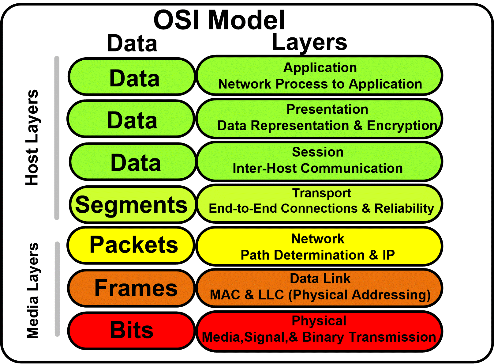

* Not mobile friendly yet *
Network Basics
Network components
What comprises our networks :
Network Basics
Network Geography
PAN
The Personal Area Network (PAN)
is the smallest type of wired or wireless
network and covers the least amount of area.
(ex : usb & bluetooth)
LAN
The Local Area Network (LAN)
connects components within a limited distance.
(generally up to 100 meters or 300 feet)
Your network can be consisting of either wifi
or eithernet.
If using ethernet, you're going to use the
IEEE 802.3 standard.
If using wifi, you're going to use the
IEEE 802.11 standard.
CAN
The Campus Area Network (CAN) connects
LANs that are building-centric across
a university, industrial park, or business park.
This can cover several miles, and across many different
buildings.
OSI Model
OSI Model Overview
Intro
The Open System Interconnection model (OSI)
was developed in 1977 by the International Organization
for Standardization.
This orgnization is responsible for creating different standards,
which we refer to to as the ISO.
For example, if you see ISO 7498, that's the standard we
use to refer to the OSI model.
Networks are all about communicating data.
Data is going to be called different things as it flows
through our network it goes through different names as it
goes through those different layers of the OSI model.

The OSI model starts at the Physical Layer and ends
at the Application Layer.
When we talk about data at layers 7, 6, 5 we
are talking about information.
At layer 4 (transport layer) we're going to call data
a segment.
At layer 3 (network layer) we refer to it as a packet.
At layer 2 (data link layer) we call it a frame.
At layer 1 (physical layer) is where you've convererted the
data into 1s & 0s to send it across our medium (wire), we call
this bits.
Layer 1 (Physical Layer)
Intro
At the bottom of the OSI Model is we'll
we find our first layer, the physical layer.
This is where bits are transmitted across the network and
includes all of the physical and elecetrical characteristics of
this network.
This is going to tell us whether we're using an Ethernet network,
whether we're using fiber or copper cables, whether we're
using Cat5 or Cat6, and even if we're using radio
frequency in the case of Wi-Fi.
Bits
Regardless of which method we're using to send our data across this
first layer, it's always going to occur as binary
bits.
These are going to be a series of 1s & 0s.
Now, each media has a different way of representing thse bits,
these series of 1s & 0s, because these series of 1s & 0s
are the basic building blocks of all of our data.
Now, when we switch between these two modes,
whether we should read a 1 or a 0 on the network, this is
called transition modulation.
Data on a computer network is represented as a binary expression.
Electrical voltage (on copper wiring) or light
(carried via fiber-optic cabling) can represent these 1s and 0s.
The presence or the absence of voltage on a wire can represent a binary 1 or a binary 0, respectively.
The presence or absence of light on a fiber-optic cable can represent a 1 or 0 in binary.
Wiring
As we start understanding that, we then haveto look at the cables
themself becuase this is also part of our physical layer.
If we're using someting like a Cat5 or a Cat6 cable,
we may have a certain connector on the end called an RJ45,
which allows us to plug that cable into the back of a computer or
into a switch.
The way that connector is wired is based on a certain standard.
We use two standards inside our network: TIA/EIA-568A and
TIA/EIA-568B.
Now, we'll talk about these and which way these pins actually
are set up inside, this connector in a future lesson.
Topology
There's on thing we have to think about at the physical layer,
and that's the topology of the network.
How are we actually running these cables to physically connect
the different decices together?
We can look at this from a Layer 1 perspective.
Is it a bus, it it a ring, is it a star?
Is it a hub and spoke?
How about a full mesh, a partial mesh, or any other topology
that we discussed.
When it comes to figuiring this out,
your're going to look at how they're
physically cabled, and if you drew them out, that will
tell you what phyiscal topology you have.
Synchronizing bits
For two networked devices to successfully communicate at the
physical layer, they must agree on when 1 bit stops and
another bit starts. Two basic approaches to bit
synchronization include asynchronous &
synchronous.
With the asynchronous bit synchronization approach,
a sender indicates that it is about to start transmitting by
sending a start bit to the receiver. When the receiver sees
this, it starts its own internal clock to measure the subsequent
bits. After the sender transmits its data, it sends a stop bit to
indicate that it has finished its transmission.
With the synchronous bit synchronization approach,
it synchronizes the internal clocks of both the sender and the receiver to
ensure that they agree on when bits begin and end. A common
approach to make this synchronization happen is to use an external
clock (for example, a clock provided by a service provider), which
is referenced by both the sender and the receiver.
Bandwidth usage
Speed is measured by the total amount of data you
can download or upload in one second. Bandwidth
is measured by the total amount of data you’re allowed
to download or upload in one second, which depends
on your internet plan and the connection type.
Bandwidth is your maximum possible speed.
The two fundamental approaches to bandwidth usage on a network
are broadband and baseband.
Baseband is a system that uses a single data
channel in which the whole bandwidth of the transmission
medium is dedicated to one data channel at a time.
Baseband uses all of the frequency of the cable
all of the time. An example of this is a telephone, because
picking up the phone uses all of the bandwidth
allocated to that phone line. Another example of baseband
network is a wired home thernet network.
When we use baseband, we're use a reference
clock that allows us to send the information for both
the sender and receiver at the certain time.
By using this reference clock, this is an example
of using a synchronous communication.
Broadband is a multiple data channel system in which
the bandwidth of the transmission medium carries several
data streams at the same time.
Broadband is going to divide our bandwidth into
seperate channels. An example of this is a TV service
because a single cable is coming into your home, but
it carries 200+ channels.
In summary baseband is related to digital signals, while
broadband is related to analog signals.
Baseband system does not allow digital signals to
share one medium simultaneously while broadband
system can
transmit different data side by side at the same time.
Multiplexing
Multiplexing is a technique in wihch several signals are
combined into one composite signal so that they can
all be transmitted on a common channel.
In order to transmit various signals in a single
common channel, it is important to keep them seperated as
to not cause interference and to make it possible for
the receiving end to seperate them.
Time-division multiplexing (TDM) supports different
communication sessions on the
same physical medium by causing the sessions to take
turns. For a brief period of time, defined as a
time slot, data from the first session will be sent, followed
by data from the second session. This continues until
all sessions have had a turn, and the process repeats
itself.
A downside to TDMis that each communication session
receives its own time slot, even if one of the sessions
does not have any data to transmit at the moment.
To make a more efficient use of available bandwidth,
Statistical time-division multiplexing(StatTDM)
dynamically assigns time slots to communications
sessions on an as-needed basis.
Frequency-division multiplexing FDM divides a medium’s frequency
range into channels, and
different communication sessions transmit their data
over different channels.
Now, for the exam, the good news is you don't need to
memorize TDM, StatTDM, and FDM,
but rather you just need to understand that
multiplexing involves taking some limited
amount of resource and using it more efficiently.
Multiplexing allows multiple people to
use a baseband connection at the same time
Physical Layer Device Examples
The final thing we need to talk about is
some examples of Physical/Layer1 devies.
The most common one is a cable.
If I have a fiber optic cable or an
Ethernet cable or a coaxial cable,
these are all different types of media.
So, if I have a fiber optic cable and I
put light in one end, I'm going to get
light out of the other end. That's
a physical response, a physical layer
of the OSI Model.
Additionally, beyond wired cables, we also have
wireless things, things like Bluetooth and Wi-Fi
and near field communication.
All of these radio frequencies make up
the media at Layer1 for those types of networks.
The final example is infrastructure devices,
and that will be things like hubs,
access points, and media converters.
All of these devices operate at the bit layer.
This is going to be a function to just simply repeat
what they get.
Whatever comes in is gonig to go out.
There's no logic to it, there's no
intelligence to it.
Layer1 devies simply repeat whetever
they're told.
Later1 is dumb devices.
They're simply repeaters.
Whatever they take in, they sind it right
back out.
Layer 2 (Data-Link Layer)
Intro
The Layer 2 of the OSI model, the data link layer.
In the data link layer we're going to package up bits from
Layer 1 and put those into frames and then, we're going to
take frames and transmit them throughout the network while
performing some error detection detection, correction,
identifying unique network devices using MAC addresses,
and we're going to provide some flow control.
With Layer 2 we deal with things on a logical level.
MAC address
A MAC address (media access control address) is a means for
identifying a device physically and allowing it to operate on a logical topology.
These MAC addresses are important for dealing with switches and other
Layer 2 devices.
When it comes to identifying MAC addresses, every manufacturer
of a network card assigns a unique 48-bit physical adressing
system to every network interface card they produce.
A 12-digit hexadecimal number is used to represent
MAC addresses. MAC addresses are always
written hexadecimally wherein each of the letter or
numbers is considered four bits.
The first 24 bits or six letters/numbers as
you can see here identifies the particular vendor who made that card.
The second half is going to represent the exact machine it
belongs to.
LLC Layer
The data link layer is the second lowest layer.
It is divided into two sublayers. The logical link
control (LLC) sublayer, and (MAC)
sublayer.
Logical Link Control (LLC) provides
connection services and allow your recipients to
acknowledge the messages have gotten where you
thought thought they were going.
LLC is the most basic form of flow control, essentially it's
going to limit the amount of data that a sender can send at once
and allow the receiver to keep from
being overwhelmed.
LLC also provices basic error control functions
such as allowing the receiver to inform the sender if their data
fram wasn't received, or if it was received corrupted and
it does this by using a checksum.
Since everything it receives is just a series of 1s &
0s, the receiver is going to add all of these up and
the last bit will either be even or odd.
If it matches, they add them all up and if they're
even, then, it's going to assume that this was good.
If you have received a zero that means it was even.
If the last bit was oddi>, meaning it was a one,
and they added up all the numbers
and they got an odd number,
that means it was good, as well.
But if not, they can figure that something was bad
and then ask for a retransmission of the frame.
??? The primary function of LLC is to multiplex protocols over the MAC layer while transmitting and likewise to de-multiplex the protocols while receiving.
LLC provides hop-to-hop flow and error control.
It allows multipoint communication over computer network.
Frame Sequence Numbers are assigned by LLC.
In case of acknowledged services, it tracks acknowledgements
How is communication synchronized?
Communication can be synchronized across Layer 2
according to three different schemes.
First we have something known as isochronous mode
which happens when the networks use a common reference clock similar to
synchronous, yet they also crate time slots for
transmissions, much like we did with time division multiplexing.
This has less overhead than either of the other two modes because
both devices know when they can communicate and for exactly how long.
The second method we can use is known as synchronous method and
this is much like Layer 1.
It's going to involve devices using the same clock.
But the reason it's different from isochronous is that this is
going to allow us to have beginning and ending frames and
and special control characters to tell us when we're going to
start and when we're going to end based on those beats.
Networks operate in that devices can only communicate at
frequencies specified by particular clock cycles.
Because of this, there isn't a lof of gap time that
isn't already properly utilized and this becomes a major
drawback for sychronized mode.
Finally we have asynchronous which is going to
allow each of our network decives to reference their
own clock cycles and use their own clock cycles and
their own start and stop bits.
In this way, there's no real control over when the
devices are allowed to communicate, and that becomes
the major drawback here.
Ending?
Now, when we look at Layer 2 devices, we
have things like network interface cards,
bridges, and switches.
In contrast to how a hub is a dumb machine
that simply relies on a message coming in and repeating
it back out, switches are smarter.
They can actually use logic to learn which physical
ports are attached to which devices based on their
MAC addresses.
This way they can send data to specific devices in
the network, allowing us to picm up and choose
different lines of communication to go to different
areas.
?! Now, we'll talk all about how this works and how
these switches do these including things like
CAM tables using the MAC addresses and
how they're doing the switching across the network in
later lessons and we'll go into depth in that
because you will need to understand that
to understand how networks really work.
But for right now,
just remember that switches, bridges, and MAC addresses
are three great examples of things that operate at Layer 2,
the data link layer.
Layer 3 (Network Layer)
Intro
At the network layer, we're concerned with
routing. Layer 3 is all about how we're
going to foward traffic, which we refer to
as routing uisng logical addresses.
For example, your computer has an IP address.
And that IP adress is either going to be an
IP version 4 (IPv4) or an IP version 6 adress (IPv6), or
both. Both of these are considered Layer 3 protocols
IPv4, and IPv6 are the most common and popular
logical addressing scheme
We're also going to be concerned with what's known as
switching, also known as routing.
Not to be confused with switches which are
layer 2 devices.
Upcoming concepts :
IP address
Back in the '80s and '90s, there
was AppleTalk for
Apple computers.
And if you used a Windows or a Novell Network
computer, you might have used IPX, which
was the Internetwork Packet Exchange.
What killed both these off
was Internet Protocol (IP)
There are other protocols that you could use
in Layer 3, IP is just the most
common.
Now, some of those are still existing on some
legacy systems, which means old systems
in some corporate network.
The routing protocol of the internet that
we use today is known as IP.
Recall IP comes in two
variants, IPv4 and IPv6.
Above is an example of an IP address
This is called a dotted-octet notation which
is four sets of numbers separated by dots.
How should data be forwarded or routed?
There are three main ways for data to
be forwarded or routed.
Which are Packet switching, Circuit switching, Message switching.
The most commonly used on in a network is going to be
routing, which is also known as packet switching.
This is where data is divided into packets and then
forwarded on based on it's IP address.
Packets are going to take different routes, and
we don't care which route it takes, as long as it gets
to its final destination.
When we talk about circuit switching, though,
this where we want to have the same path each and
every time.
We're going to get a dedicated communications link
that's established between our two devices.
Now the third type of switching we have is known as
message switching. This is where all the
data is divided into messages, and they're similar
to packet switching in this idea but the
messages can actually be stores and forwarded.
We want to make sure the data is going to get where it's
going, and that's why message switching can be very
for us.
Almost all of our networks nowadays and the ones you
utilize are going to be using packet switching.
The reason is we have other methods that will check if
something is not getting to the distant end, and will
be resent over another path until it finally gets there.
Most of the Internet works by using packet switching.
Route discovery and selection
Next is route discovery and selection
this is how are we going to decide which path
we're going to take to send a message.
Routers maintain a routing table so, they can
understand how to forward a packet based on the
destination IP of where it wants to get to.
There are lots of different ways that it can do this,
and they can do this either as
a static route, or a dynamically-assigned route using
a routing protocol like RIP, OSPF, & EIGRP.
Routing protocols help us decide how data is going
to flow across the network, and how the routers are
going to communicate that information.
Connection Services
Connection services are going to augment
layer 2 connection services and provide
us with some additional reliability.
Again, we're going to have
some flow control added here, and this is
going to prevent the sender from sending data faster
than the receiver can get it.
We also have packet reordering. This
is really important because it allows us to take
a big chunk of data, cut it up into little pieces
of packets, and then send all those packets
off in different directions to get to their final
destination. A problem that usually arises is that
packets arrive at the destination in the wrong order.
Packet reordering allows them to get all this
data at the end destination at the receiver.
The benefit here is that because of routing,
each packet gets numbered and sequenced, and we
can put them back into the right order.
Internet Control Message Protocol (ICMP)
Internet Control Message Protocol (ICMP) is
is used to send messages and operational information to
an IP destination.
The most commonly used one is ping.
Ping sends out a packet and tells us if it was
received or not by the distant end and how long it
took.
This is not a tool used regularly by end-user applications,
but it is used by us as adminstrators to help troubleshoot
our network.
Another variation is known as traceroute,
which will trace thr route that a packet takes
through the network and tells you every single
router along the way as it goes through.
Layer 3 devices
Now lets look at some layer 3 devices that
we need to remember for the exam.
The first two are routers, and
multilayer switches.
A router looks like this icon below, a circle
with four arrows. This is a depiction of what a
router looks like in a logical diagram.
A multilayer switch works like a switch,
and router combined. It has both features of
a layer 2 switch, and a layer 3 router.
Remember that a switch is always a layer 2 device,
unless it's a multilayer switch, which will then be a layer 3 device.
Layer 4 (Transport Layer)
Lower/Upper layers
At layer 4 we have the transport layer.
Now, the transport layer is our dividing line between
what we call the upper layers of the OSI model and
the lower layers of the OSI model.
Now the lower layers consist of
physical, data link, & network layers.
While the upper layers consist of transport,
session, presentation, & application layer.
TCP & UDP protocols
Transmission control protocol (TCP) is a
connection oriented protocol is a reliable
way to transport segments across our network.
Now, if a segment has dropped, the protocol will
ask for acknowledgment each and every time.
If it doesn't get that acknowledgement, it's going to
resend that piece of information.
For this reason we call is a connection full protocol, because
it has this two-way type of information.
Now, let's look at the diagram above.
Here we have a client on the left, and a
server on the right.
The client is going to send what's called
a synchronization packet (SYN packet)
Three-way handshake
Now this is what refer to as a three-way handshake.
TCP/IP Model
TCP/IP Model
???
Data Transfer Over Networks
???
Ports and Protocols
???
Finding Open Ports
???
IP Protocol Types
???
Media and Cabling Distribution
Media and Cabling
Copper Media
Building a Cable
Fiber Media
Transceivers
Cable Distribution
Wiring a Network
Testing the Network
Ethernet Fundamentals
Ethernet Fundamentals
Network Infrastructure Devices
Hands-on with Devices
Additional Ethernet Switch Features
Spanning Tree Protocol
Virtual Local Area Network (VLAN)
Specialized Network Devices
Other Devices
IP Addressing
IP Addressing
IPv4 Addressing
IPv4 Data Flows
Assigning IP Addresses
Computer Mathematics
Subnetting
Subnetting Practice
Subnetting by Hand
IPv6 Addressing
IPv6 Data Flows
Routing
Routing Fundamentals
Routing Tables
Routing Protocols
Address Translation (NAT and PAT)
Multicast Routing
Network Services
Network Services
DHCP
Hands-on with DHCP
DNS
Hands-on with DNS
NTP
Wide Area Networks (WANs)
Wide Area Networks (WAN)
Wired WAN Connections
Wireless WAN Connections
WAN Technologies (Part 1)
WAN Technologies (Part 2)
Hands-on with WANs
Other WAN Connections
Wireless Networks
Wireless Networking (WLAN)
WLAN Service Sets
Wireless Antennas
Hands-on- with Antennas
Wireless Frequencies
Wireless Security
Hands-on with Wireless
When Security Fails
Cloud and the Datacenter
Cloud and the Datacenter
Virtual Network Devices
Voice Over IP (VoIP)
Cloud Computing
Cloud Concepts
Virtualization and Cloud Computing
Infrastructure as Code
Connectivity Options
Datacenter Architecture
Network Security
Network Security
The CIA Triad
Threats and Vulnerabilities
Risk Management
Security Principles
Defense in Depth
Multifactor Authentication
Authentication Methods
Network Access Protocols
Network Access Protocols
Network Access Control
Physical Security
Asset Disposal
Network Attacks
Network Attacks
Denial of Service Attacks
General Network Attacks
Spoofing Attacks
Malware
Security Technologies
Security Technologies
Firewalls
Hands-on with Firewalls
Hands-on with Software Firewalls
IDS and IPS
Remote Access
Virtual Private Networks (VPNs)
IPSec
Simple Network Management Protocol
Network Logging
SIEM
Networking Hardening
Network Hardening
Patch Management
Password Security
Unneeded Services
Port Security and VLANs
Inspection and Policing
Securing SNMP
Access Control Lists
Wireless Secuirty
loT Considerations
Network Availability
Networking Avaliablity
High Availability
Designing Redundant Networks
Recovery Sites
Facilities Support
Quality of Service (QoS)
Qos Categorization
QoS Mechanisms
Network Policies
Network Policies
Plans and Procedures
Hardening and Security Policies
Common Agreements
Network Management
Network Management
Common Documentation
Performance Metrics
Sensors
NetFlow Data
Interface Statistics
Environmental Sensors
Troubleshootin Physical Networks
Network Troubleshooting Methdology
Cable Review
Cabling Tools
Cable Signal Issues
Copper Cable Issues
Fiber Cable Issues
Ethernet Issues
Troubleshooting Wireless Networks
Troubleshooting Wireless Networks
Wireless Considerations
Coverage and Interference
Incorrect Configurations
Captive Portal
Network Tools and Commands
Network Tools and Commands
Software Tools
ping and traceroute
ipconfig, ifconfig, and ip
nslookup, dig, and hostname
arp, route, nbtstat, netstat
telnet, tcpdump, and nmap
Troubleshooting Network Issues
Troubleshooting Network Issues
???
Collisions and Broadcast Storms
???
Duplicate Addresses
???
Routing Issues
???
Loops
???
DHCP Issues
???
IP and VLAN Settings
???
Firewall Issues
???
DNS and NTP Issues
???
Network Performance Issues
???
Other Issues
???
Network Devices
Network Devices Part 1
Host
Host are any device which sends or
receive traffic.
(Examples : Computers, Phones, smart TVs, smart watches, etc)
Host typically fall in two categories clients or
servers. Clients initiate request servers
respond. These terms are relative to specific communication.
(A server is a computer with software installed
which responds to specific request)
IP Address
An IP Address is the identity of each host.
An IP address is needed to send or
receieve packets on a network.
IP addresses get stamped on everything
that each host sends.
For example when a client makes a web request to site.com, it
sends a packet which includes what web page it is asking for, as
well as a source ip address, and a destination ip addresses.
The source ip address is going to be the client's ip address,
and the destination ip address is going to be the server's ip
address.
IP addresses are typically assigned in some sort
of hierachy.

Network
A network is what actually does the transportation of
traffic between hosts. In it's simplest form anytime you connect
two hosts you have a network.
Before networks in order to transfer data between hosts required
portable media (disks, thumb drives, etc...).
A network is really just a logical grouping of hosts which
require similar connectivity. Networks can contain other
networks which is reffered to as Sub-Networks (Subnets).
Instead of having networks connect directly to each
other in every possible combination, networks are connected
to a central resource, the internet which is simply
a bunch of interconnected networks, networks connected
to other networks.
Network Devices Part 2
Repeater?
Repeaters regenerate signals
Hub
Hubs are multiport repeaters.
Bridge
Bridges sit between HUB connected hosts.
Switch
A switch facilitates communication within a
network.
Routers
A switch facilitates communication between a
networks.
Gateway
A gateway is each hosts way out of their network.
OSI model
Intro
The purpose of networking is to allow
two hosts to share data with one another.
Networking allows us to automate all this
across the wire. Hosts must follow a set of rules
in order to achive this.
Networking also has its own set of rules, the rules
for networking are divided into seven different layers
known as the OSI model.
OSI is simply a model, NOT RIGID.
1) Physical ; Transporting bits ; Cables, Wifi, Repeaters, & Hubs
2) Data Link ; Hop to hop ; NIC, MAC Address, Routers, Switch
3) Network ; End to end ; IP Address
4) Transport ; Service to Service ;
Two common address schemes to distinguish dates streams
are TCP & UDP which are ports.
TCP favors reliability. UDP favots efficiency.
Port #s range from 0-65535.
Servers listen for request to pre-defined ports.
Clients make request to the IP address & to the port # in question.
Clients also select a random source port for each
connection.
When a packet is initially send from a client it
includes a Source (SRC) & Destination (DST)
??This process occurs for each connection made the client
the client. In each case the client is searching a new
random source port.
Ports ensure that the right application gets the
right data. THis process also allows the client to make
multiple connections to the sme server.
(exp : when client/browser opens a new tab, a new random
source port is created.)
?Encapsulation
?The construct of a L2 header & its ensuing data is known
as a frame.
Physical Layer
Everything Hosts do to speak on the Internet Pt1
Everything Switches do to speak on the Internet Pt1
Everything Routers do to speak on the Internet Pt1
Intro
.xxx (IP address)
.xxx (MAC address)
Switches facilitates communication within a network(review).
A node is a device the implements IP.
A router is a node that forwards IP packets not
explicitly to itself.
A host is any node that is not a router.
A router forwards packets not destined to themselves.
Routers are connected to a network by having
an IP & MAC address on each interface (network).
To do this routers must have a routing table corrilating
to each route in each network.
Each route has its own routing table.
Routers use the routing tables to send packets.
Routing tables can be populated via 3 methods ;
Directly Connected, Static Routes,
& Dynamic Routers.
Directly connected are routes for the Network which are
attached.
When routes receive packets with an unknown destination IP,
packet is dropped.
Static routes are routes manually
provided by an administrator.

Everything Routers Do Pt2
A ARP is the mapping of known IP address to unknown
MAC address.
Routers have ARP Tables, mapping of L3 to L2 address.
(Everying with an IP address has an ARP Table.
ARP Tables start empty & get populated dynamically
as needed with network traffic.